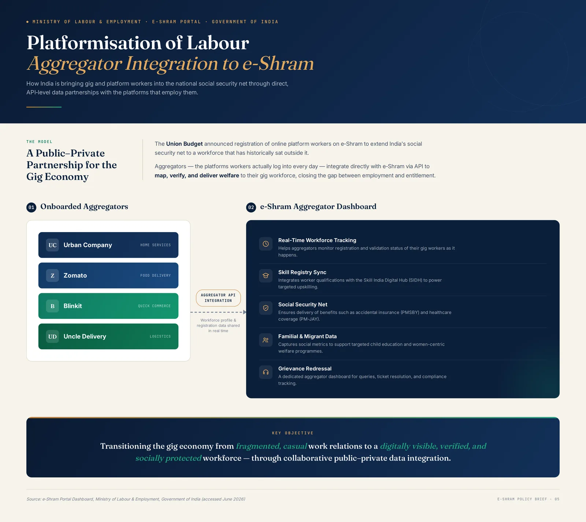
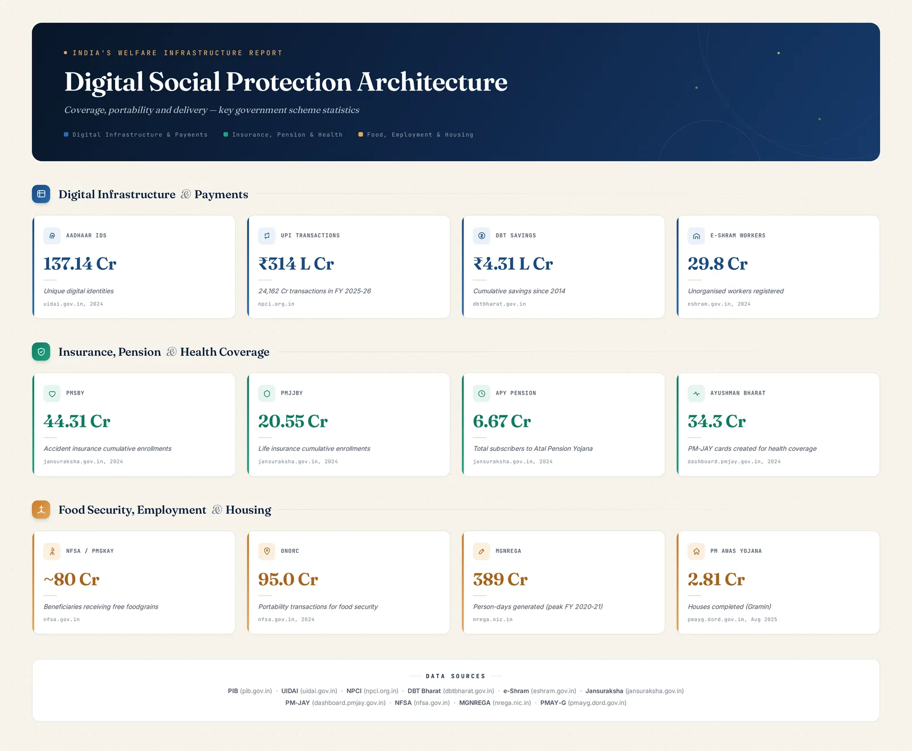
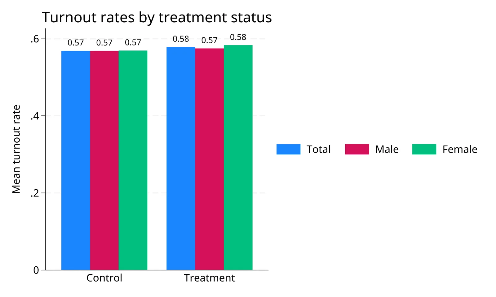

Development Economist & Quantitative Labour Researcher
Research Associate, V.V. Giri National Labour Institute (VVGNLI), Ministry of Labour & Employment, Govt. of India
Contributor, PLFS Data Story, Digital Labour Tech • India Labour Observatory
Alum: Jawaharlal Nehru University (CISLS) • Utkal University • UGC-NET Qualified (Economics)
I am an empirical development economist investigating the institutional structures governing informal labour, structural wage disparities, and the transformation of work under emerging digital platforms and artificial intelligence in the Global South.
I contributed empirical research and analysis to the PLFS 2024–25 data story "India’s Labour Market in 2025: Structural Cleavages, Gender Gaps, and the Educated Youth Paradox", which was first published at Digital Labour Tech and featured on the India Labour Observatory. The study examines female labour force participation, structural wage disparities, and youth unemployment in India using microdata from the Periodic Labour Force Survey.
At the V.V. Giri National Labour Institute, I contribute to policy research for the BRICS Labour Research Network analyzing the consequences of Artificial Intelligence and algorithmic management for labour markets across member states. Concurrently, I contribute to national policy documentation on informal worker welfare and the platform economy, including aggregator API interoperability for India's e-Shram social protection portal.
With over 3 years of cumulative research experience, my toolkit bridges secondary microdata analysis (PLFS, NSSO, Oaxaca-Blinder decompositions) in Stata, Python, and R with primary digital survey design and administration (SurveyCTO, KoBoToolbox, XLSForm logic, automated High-Frequency Checks [HFCs]). My fieldwork spans extensive primary deployments across agrarian, tribal, and unorganized urban contexts in Odisha, Uttar Pradesh, and Delhi NCR.
Labour Economics & PLFS Microdata
Empirical analysis of Periodic Labour Force Survey microdata, structural wage penalties, and youth employment trends.
Gender & Structural Disparity
Oaxaca-Blinder wage decompositions, unpaid family labour, female labour force participation (FLFP), and rural Self-Help Groups.
AI & Platform Labour Governance
BRICS multilateral labour policy, algorithmic surveillance, e-Shram aggregator API integration, and portable social protection.
Global Value Chains & Extraction
Multi-tiered subcontracting, bauxite mining frontiers, labour control regimes, and political economy of resource extraction.
Using unit-level microdata from the Periodic Labour Force Survey (PLFS 2024–25), this study evaluates the structural contours of the Indian labour market across 36 States and Union Territories. We document three persistent structural cleavages: first, while headline Female Labour Force Participation (FLFP) has expanded to 35.6%, a majority of rural working women remain in unpaid family labour within subsistence agriculture without independent remuneration or social security. Second, educated youth face an unemployment rate of 28.4%—several times the national average—reflecting structural skill mismatch and capital-intensive growth. Third, twofold Oaxaca-Blinder wage decompositions demonstrate that a substantial share of the gender wage deficit is driven by unobservable structural discrimination rather than human capital endowment differentials.
@techreport{kumar_pradhan_2026_labour_market,
title = {India's Labour Market in 2025: Structural Cleavages, Gender Gaps, and the Educated Youth Paradox},
author = {Kumar, Abhinav and Pradhan, Ananya},
institution = {Digital Labour Tech and India Labour Observatory},
year = {2026},
month = {January},
url = {https://indialabourobservatory.com/stories/indias-labour-market-in-2025/}
}
WORKING PAPER • SEMINAR RESEARCH MONOGRAPHJEL: J46, L72, O17, F23
This paper investigates the political economy of Global Value Chains (GVCs) and Global Production Networks (GPNs) within the extractive sector, focusing on bauxite mining and aluminium refining in Odisha, India. Drawing upon theoretical frameworks of value capture, multi-tiered labour subcontracting, and labour control regimes, the study evaluates the impact of transnational capital on local labour processes and livelihood security through an empirical case study of Vedanta Limited's operations in Lanjigarh and surrounding mining clusters. Based on primary fieldwork comprising 35 semi-structured interviews and 5 Focus Group Discussions (FGDs) alongside longitudinal data from the Indian Bureau of Mines (IBM) and official state reports, the findings demonstrate that while mineral extraction integrates the regional economy into global commodity markets, it generates severe socio-economic vulnerabilities. Rather than fostering formal, secure employment, lead firms and their intermediaries utilize multi-layered contract systems to enforce extended work shifts, sub-minimum wages, and unsafe working conditions, suppressing collective bargaining with the aid of state mechanisms.
@article{pradhan2021gvc,
title = {Global Value Chains in Extractive Industries: A Case Study of Mining, Labour Precarity, and Value Capture in Odisha},
author = {Pradhan, Ananya},
journal = {Centre for Informal Sector and Labour Studies (CISLS), Jawaharlal Nehru University},
year = {2021},
address = {New Delhi, India}
}
Policy Research & Multilateral ReportsGovernmental & institutional policy
MULTILATERAL POLICY STUDY • BRICS LABOUR RESEARCH NETWORKJEL: O33, J24, J81
Shaping the Future of Labour in BRICS: The Role of Artificial Intelligence (AI) and Emerging Technologies
Multilateral Assessment of Algorithmic Management, Platformisation, and Just Transitions across Member States
V.V. Giri National Labour Institute • Ministry of Labour & Employment • Research Associate & Technical Coordination: Ananya Pradhan
Multilateral research study under the BRICS Labour Research Network evaluating the structural transformation of work under artificial intelligence, automated surveillance, and platformisation across member states. Responsibilities included developing gender-disaggregated survey modules, managing Stata data cleaning and analysis, coordinating national country reports, and drafting technical proceedings for the Final Meeting under the Indian Presidency.
@report{vvgnli2026brics,
title = {Shaping the Future of Labour in BRICS: The Role of Artificial Intelligence (AI) and Emerging Technologies},
author = {{V.V. Giri National Labour Institute}},
institution = {Ministry of Labour and Employment, Government of India},
year = {2026}
}
Theses, Field Monographs & Writing SamplesScholarly manuscripts
This study employs twofold and threefold Oaxaca-Blinder wage decomposition methodologies on Periodic Labour Force Survey (PLFS) microdata to dissect the empirical determinants of the gender wage gap across both formal and informal segments of the Indian economy. Controlling for human capital endowments (education, technical qualifications, potential experience), geographic controls, and occupational/industry classifications, the study partitions the raw wage differential into explained endowment effects and an unexplained component reflecting structural discrimination and occupational segregation. The findings confirm that unexplained discrimination accounts for a substantial majority (68%+) of the gender wage deficit in both regular salaried and casual wage employment.
@mastersthesis{pradhan2019gender,
title = {Gender-Based Wage Discrimination in India: An Oaxaca-Blinder Decomposition Analysis},
author = {Pradhan, Ananya},
school = {Centre for Informal Sector and Labour Studies (CISLS), Jawaharlal Nehru University},
year = {2019},
type = {M.A. Thesis},
address = {New Delhi, India}
}
FIELD MONOGRAPH • SOCIAL EXCLUSION & AGRARIAN LABOURJEL: J71, O18, Z13
Caste System and Patterns of Discrimination in Rural Labour Markets
An Empirical Investigation in Khamarsahi Village, Kendrapara District, Odisha
Ananya Pradhan — Centre for Study of Discrimination and Exclusion (CSDE), JNU • Supervisor: Prof. Y. Chinna Rao
Based on primary qualitative and quantitative fieldwork in Khamarsahi village, Odisha, this monograph documents the structural persistence of caste hierarchies within agricultural labour contracts. The study examines how social status reinforces debt dependencies, wage suppression, and occupational boundaries for Scheduled Caste agricultural workers, restricting outside options and diminishing collective bargaining capacity during harvest seasons.
@techreport{pradhan2016caste,
title = {Caste System and Patterns of Discrimination in Rural Labour Markets: A Case Study of Khamarsahi Village, Odisha},
author = {Pradhan, Ananya},
institution = {Centre for Study of Discrimination and Exclusion, Jawaharlal Nehru University},
year = {2016},
address = {New Delhi, India}
}
RESEARCH PAPER • POLITICAL ECONOMYJEL: B51, P16, F23, J46
This paper studies the existence of class and the changes happened to its form and meaning in the Globalisation era, using political economy as a framework to analyse the concept of ‘Class’ through production relations in the contemporary world. It investigates the relational definition of class, tracing its origin from the dissolution of primeval communities, primitive accumulation, and historical modes of production through to contemporary international financial capital, transnational corporate monopolisation, global value chains, informalisation of the working class, and the intermediate middle class.
@misc{pradhan2018class,
title = {‘CLASS’: A Relational Political Economy Analysis},
author = {Pradhan, Ananya},
school = {Centre for Informal Sector and Labour Studies (CISLS), Jawaharlal Nehru University},
year = {2018},
address = {New Delhi, India}
}
Doctoral Inquiries • 2026–2027 Admissions
Prospective Doctoral Research Agenda & Questions
I am actively preparing research proposals for International PhD applications (UK, Europe, and US) in Development Economics, Empirical Labour Economics, and Applied Microeconometrics. My proposed dissertation centers around three interconnected questions:
INQUIRY 01
Algorithmic Management & Debt Cycles in Platform Work
How do black-box trip dispatch algorithms, dynamic surge pricing, and algorithmic rating penalties alter informal workers' reservation wages and induce debt-financed asset acquisition in Global South megacities?
INQUIRY 02
Structural Decompositions of Informal Gender Penalties
Applying twofold and threefold Oaxaca-Blinder decompositions to untangle unobservable structural discrimination from endowment differentials across rural self-help groups, informal tenancy, and unpaid family subsistence labour.
INQUIRY 03
State Registries, API Interoperability & Welfare Delivery
Evaluating the institutional architectures connecting private aggregator APIs to public social protection databases (e.g. e-Shram), testing mechanisms for portable entitlements and data sovereignty in unorganized sectors.
Empirical Evidence & Policy Architectures
Research Visuals & Econometric Showcase
Econometric decomposition models, survey audit diagnostic curves, and digital policy architectures. Click any figure to expand in full-screen interactive view.
Figure 1
Figure 1: Gender Wage Decomposition
Oaxaca-Blinder decomposition isolating endowment vs. structural discrimination effects (PLFS 2024–25).
Figure 2
Figure 2: Rural-Urban Wage Gap
Evaluating human capital premiums versus spatial market segregation across Indian states.

Figure 3
Figure 3: e-Shram API Architecture
Public-private data architecture connecting aggregator platform APIs to social protection registries.

Figure 4
Figure 4: Digital Social Protection
National welfare delivery architecture: DBT, Aadhaar, e-Shram, and portable entitlements.

Figure 5
Figure 5: Stata Audit Diagnostics
Daily High-Frequency Check (HFC) turnout diagnostics and outlier detection for live survey QA.
Primary Empirical Evidence
Fieldwork & Primary Surveys
Over 3 years of cumulative primary field research, digital CAPI survey administration (SurveyCTO, KoBoToolbox), and qualitative inquiries across rural, tribal, and unorganized urban labour markets in India.
Sustainability of Digital Jobs: Youth Livelihoods in Western Uttar Pradesh
Western UP • ICSSR Project (2026)
Scope & Methodology: N = 100+ youth respondents • KoBoToolbox CAPI • XLSForm logic • Daily Stata HFC audits
Administered structured digital surveys using KoBoToolbox across geographically dispersed field sites in Western Uttar Pradesh for 100+ youth respondents. Programmed XLSForm logic with constraint checks, skip patterns, and GPS geotagging. Managed real-time data auditing pipelines and High-Frequency Checks (HFCs) to ensure zero enumerator fabrication and complete skip-pattern fidelity.
Collaborated on a mixed-methods study on app-based platform labour across Delhi NCR. Collected 60 primary structured interviews with quick-commerce, food delivery, and ride-hailing workers, evaluating algorithm-driven precarity, piece-rate volatility, asymmetric information in trip assignments, and gendered barriers to entry.
Conducted participatory rural appraisal and semi-structured interviews in remote mountainous terrain of the Niyamgiri Hills. Documented agricultural practices, land-use shifts, and women's roles in household production amidst bauxite mining expansion, working in multilingual Odia and Kui settings.
Scope & Methodology: Focus Group Discussions (FGDs) • Primary documentation • Microcredit & bank linkage
Conducted Focus Group Discussions (FGDs) with women's Self-Help Groups engaged in agriculture, fisheries, and allied rural livelihoods. Analyzed microcredit access, bank linkage programs, agricultural credit access, and debt cycles among rural women.
Scope & Methodology: Primary village fieldwork • Scheduled Caste informal wage workers • CSDE / JNU
Conducted primary field interviews with Scheduled Caste informal workers in a rural agricultural setting. Documented caste-based wage suppression, tied labour relationships, debt interlinkages, and social exclusion in informal agricultural employment.
Caste StratificationAgricultural LabourWage SuppressionPrimary Interviews
Automated Stata scripting suite executing daily High-Frequency Checks (HFCs) during live field data collection. Monitors enumerator productivity, flags outlier interview durations, detects geospatial duplicate coordinates, and verifies survey skip pattern integrity across CAPI platforms (KoBoToolbox, SurveyCTO).
Field Integrity Diagnostics: 18 automated audit rules covering duration distributions, heapings on round numbers, geospatial clustering, enumerator-specific variance, and missingness patterns.
End-to-end survey instrument programming for primary data collection across rural, tribal, and urban unorganized sectors. Implements complex constraint logic, dynamic relevance filtering, multilingual text switching (Odia, Hindi, English), and GPS geotagging.
Survey Platforms: Structured XLSForm design, cascading selects, audio/timestamp audit logging, enumerator validation criteria, and real-time server synchronisation.
Microdata Analysis & Econometric Pipelines
Stata • Python • R • Microeconometrics
Automated analytical routines for extracting, cleaning, and decomposing large-scale secondary household survey data (Periodic Labour Force Survey [PLFS], NSSO). Implements multi-stage sampling weights, sub-sample variance estimates, and twofold/threefold Oaxaca-Blinder wage decompositions.
Econometric Routines: Survey-weighted linear and logistic models, endowment versus coefficient decomposition partitioning, and reproducible data documentation.
Academic Record
Curriculum Vitae
Detailed research appointments, academic education, field experience, and quantitative toolkit.
Download Official CV (PDF) ↓
Research Appointments
Mar 2026 – Present
Research Associate
V.V. Giri National Labour Institute (NOIDA) — Ministry of Labour & Employment, Govt. of India
Project: Shaping the Future of Labour in BRICS: The Role of Artificial Intelligence (AI) and Emerging Technologies.
Coordinated technical proceedings and country reports for the Final Meeting of the BRICS Labour Research Network.
Designed survey instruments with gender modules; executed data cleaning and econometric analysis in Stata.
Contributed to national policy briefs on platform aggregators and e-Shram API interoperability.
2025
Research Contributor
Digital Labour Tech • India Labour Observatory
Contributed empirical research and data analysis to "India’s Labour Market in 2025: Structural Cleavages, Gender Gaps, and the Educated Youth Paradox", examining the gender participation gap, youth unemployment, and caste-based wage differences.
The study was first published at Digital Labour Tech and featured on the India Labour Observatory.
Administered KoBoToolbox CAPI surveys for 100+ youth respondents on digital livelihoods across Western Uttar Pradesh.
Conducted real-time data auditing, High-Frequency Checks (HFCs), and field quality monitoring.
Nov 2024 – Jan 2025
Field Investigator / Research Assistant
Jawaharlal Nehru University, New Delhi
Collaborated on a mixed-methods study on platform-based labour and gender in Delhi NCR (60 in-depth surveys).
Oct 2018 – Dec 2019
Research Support – Rural Communities Documentation
CIVICUS (via Video Volunteers), Odisha
Documented and translated field data on marginalized farming, fishing, and women's Self-Help Groups (SHGs).
Oct – Dec 2018
Field Researcher – Tribal & Rural Livelihoods
Kalahandi District & Niyamgiri Hills, Odisha
Conducted ethnographic fieldwork with Dongaria Kondh tribal communities documenting livelihoods and mining impacts.
May – Jun 2016
Field Researcher – Caste & Rural Labour
CSDE / JNU, Khamarsahi Village, Kendrapara District, Odisha
Documented caste-based wage suppression, debt dependencies, and women's Self-Help Group microcredit dynamics.
Education
2017 – 2019
M.A. in Labour and Development Studies
Centre for Informal Sector and Labour Studies (CISLS), Jawaharlal Nehru University (JNU), New Delhi
Grade: 6.25/9.0 (First Class equivalent) • UGC-NET Qualified (Economics) • Thesis: Gender-based wage discrimination in India — an Oaxaca-Blinder decomposition analysis using PLFS data.
I am actively preparing research proposals for International PhD applications (UK, Europe, and US) in Development Economics, Empirical Labour Economics, and Applied Microeconometrics.
Faculty scholars, principal investigators, and research institutes interested in discussing potential supervision or pre-doctoral roles are warmly invited to reach out.